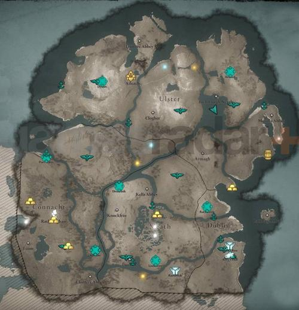

assassin's creed
Assassin's Creed (с англ. — «Кредо ассасина») — медиафраншиза компании Ubisoft, основанная на серии компьютерных игр. Первая игра вышла в 2007 году, последняя — Assassin’s Creed Mirage — 5 октября 2023 года. Большинство частей франшизы являются играми в жанре приключенческого боевика с открытым миром, где особое внимание уделяется скрытому перемещению и паркуру. Действие игр серии Assassin’s Creed происходит в разные эпохи в истории человечества и в разных странах, на фоне различных исторических событий, таких как Третий крестовый поход или Великая французская революция, с добавлением тем научной фантастики, мифологии и криптоистории. Объединяющий сюжет, затрагивающий в том числе и XXI век, рассказывает о многовековой тайной борьбе двух организаций — тамплиеров и ассасинов. Согласно отчёту, опубликованному Ubisoft в сентябре 2016 года, совокупные продажи игр серии Assassin’s Creed составили более 100 миллионов копий.
